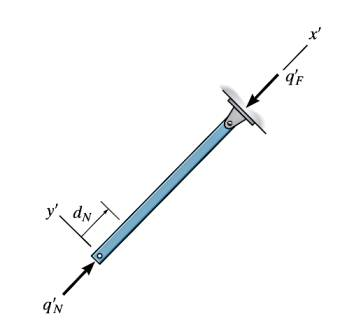
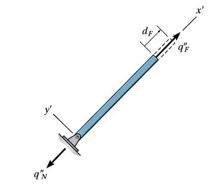
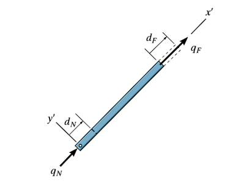
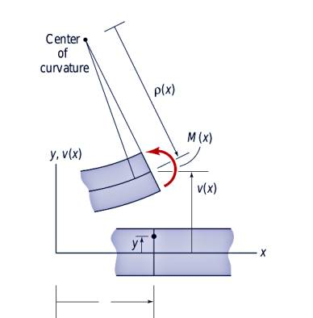
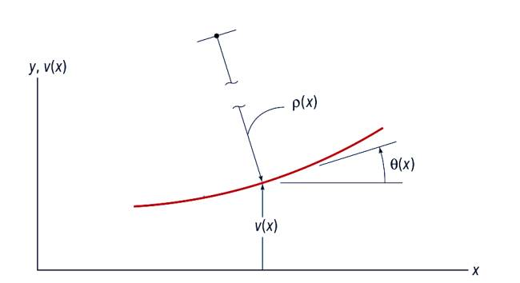
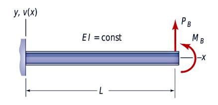
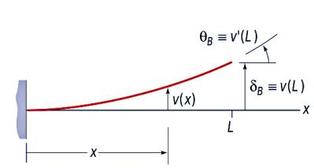

Materyel Mekaniği - 5
Tek Öğe Direngenlik (Stiffness) Matrisi
Tek bir bağlantı parçasının direngenliğini hesaplamak istiyoruz, bunu hem eksenel yöndeki yer değişmeleri, hem de bükülme, eğilme gibi eksene dik uygulanan yönlerden de hesaplamak istiyoruz.
Önce makaskiriş (truss) mekaniği ile başlayalım. Makaskiriş konusuna [5]'te değinilmişti. Daha önce [1]'de gördüğümüz formülü hatırlarsak,
$$ E = \frac{P/A}{\delta / L} $$
Biraz farklı notasyon [4, sf. 344] ile buna
$$ \Delta = \frac{NL}{AE} $$
diyebiliriz, ki $E$ yine Young'in Genliği, $N$ uygulanan kuvvet, $A$ çubuk alanı, $L$ uzunluğu.

Makaşkiriş öğelerinin sadece eksenel yüklenebildiklerini biliyoruz, eğer üstteki figür gibi bir senaryo olsaydı, alt uçtan $q'_N$ kuvveti uygulanmış, diğer nokta bir pime bağlı, bu durumda önceki formülü değiştirip
$$ \Delta = \frac{NL}{AE} \to \frac{\Delta AE}{L} = N $$
ve $\Delta$ yerine yer değişim $d_N$, kuvvet $N$ için $q'_N$ kullanırız,
$$ q'_N = \frac{AE}{L} d_N $$
Pimli noktada denge durumunda üstteki kuvvete tepki olarak ona eşdeğerde ama eksi yönde bir kuvvet oluşmalıdır, ona $q'_F$ diyelim, o zaman diğer uçta
$$ q'_F = -\frac{AE}{L} d_N $$
olur.

Eğer pimli noktayı değiştirsek, üstteki duruma baksak, o zaman yer değişim $d_F$ içeren iki formül şöyle olur,
$$ q"_N = - \frac{AE}{L} d_F \quad q"_F = - \frac{AE}{L} d_F $$

Bükülen bir çubuğun formüllerine bir giriş [1] kaynağında yapıldı. Orada moment-eğri (moment-curvature) formülü gösterilmişti.
$$ M(x) = \frac{E(x)I(x)}{\rho(x)} \qquad (1) $$
Şimdi bu formülü genişletelim, ve bir ikinci derece türeve eşitleyelim.

Resimde gösterilen semboller $M$ bükme momenti, $\rho$ çubuğun $+y$ tarafındaki bükülme çemberinin, eğiminin yarıçapı (radius of curvature). $v$ ise yine $+y$ kısmındaki yer değişimidir. Çubuğa uygulanan kuvvet dağılımının ne olduğu önemli değil, sonuçta odaklandığımız çubuğun ufak bir kısmı.
[3] kaynağında bir çemberi (yarıçapını) onun bir eğriye dokunduğu noktadaki türevler üzerinden temsil etme tekniğini paylaştık. Bu formülü mevcut probleme uygulayabiliriz.

Üstteki örnekte çemberin yarıçapı $\rho$, türevler ise $\mathrm{d} v / \mathrm{d} x$. Formül [2, sf. 466],
$$ \frac{1}{\rho} = \frac {\dfrac{\mathrm{d}^2 v}{\mathrm{d} x^2}} { \left[ 1 + \left( \dfrac{\mathrm{d} v}{\mathrm{d} x} \right)^2 \right]^{3/2} } $$
Üstteki problemde eğim çok ufaktır o zaman $\mathrm{d} v / \mathrm{d} x$ ufak kabul edilir (resimdeki eğim eğitim amaçlı abartılmış), demek ki bölendeki kare hesabı daha da ufalır, geriye sadece 1 kalır, 1 ile bölümü yok sayarız, geriye kalanlar
$$ \frac{1}{\rho} \approx \frac{\mathrm{d}^2 v}{\mathrm{d} x^2} \qquad (2) $$
Şimdi (1) formülünü tekrar düzenlersek,
$$ \frac{1}{\rho(x)} = \frac{M(x)}{E(x) I(x)} $$
diyebilirdik. Bu formülün sol tarafının (2) sol tarafı ile aynı olduğunu görüyoruz. Demek ki onları eşitleyebiliriz, moment-eğri formülü şu hale gelir,
$$ \frac{\mathrm{d}^2 v}{\mathrm{d} x^2} = \frac{M(x)}{E(x) I(x)} $$
Formüller daha kısa olsun diye bazı notasyonel ekler yapalım,
$$ v' = \frac{\mathrm{d} v}{\mathrm{d} x}, \quad v" = \frac{\mathrm{d}^2 v}{\mathrm{d} x^2}, \quad M' = \frac{\mathrm{d} M}{\mathrm{d} x}, \quad vs.. $$
İki üstteki formül kısa notasyonla söyle olur,
$$ EI v" = M \qquad (3) $$
Problem çözmek için üstteki iki dereceli diferansiyel denklemi kullanabiliriz.
Alttaki gibi bir problem olsun,

Sol ucu sabit bir dirsekli kiriş (cantilevel beam) var. Bu kirişe dikey yönde en sağ ucunde $P_B$ yükü ve $M_B$ momenti uygulanıyor. Bu sistemde eğim $v'(x)$ ve sapma $v(x)$ için gereken ifadeyi bulalım.
Uygulanan iki kuvvet kirişi yukarı doğru eğer, o zaman eğim alttakine benzer,

$M(x)$ bulmak için herhangi bir noktadaki hissedilen momentlerin toplamının sıfır olduğunu hatırlayalım,
$$ M(x) - P_B(L-x) - M_B = 0 $$
Moment-eğri denklemini (3) kullanalım, ve üsttekileri o denkleme koyalım,
$$ EIv" = M(x) = P_B(L-x) - M_B $$
Aradığımız sonuç $v$ ve $v'$. O zaman üstteki denklemi iki kere entegre etmemiz gerekli.
$$ EI v' = M_B x + P_B Lx - P_B \left( \frac{x}{2} \right)^2 + C_1 \qquad (4) $$
$$ EIv = M_B \left( \frac{x^2}{2} \right) + P_B L \left( \frac{x^2}{2} \right) - P_B \left( \frac{x^3}{6} \right) + C_1 x + C_2 \qquad (5) $$

Şimdi sınır şartlarını probleme uygulayalım, bu değerler bilinenler olarak bilinmeyen değerlerin bulunmasına yardımcı olacak. Sınır şartları problem tanımında tarif edildi, kirişin bir ucu sabitlenmiş o zaman $x=0$ noktasında hem eğim hem de sapma sıfır olmalı. Yani
$$ v'(0) = 0,\quad v(0) = 0 $$
Şartlardan ilkini $v'(0)=0$ ve $x=0$ kullanırsak (4) şu hale gelir,
$$ EI v' = C_1 = 0 $$
$v(0)=0$ ve $x=0$ kullanırsak (5) şöyle olur,
$$ EIv = C_2 = 0 $$
Demek ki (4) ve (5) şöyle yazılabilir,
$$ v'(x) = \frac{1}{EI} \left[ M_B x + P_B Lx - P_B \left( \frac{x}{2} \right)^2 \right] $$
$$ v(x) = \frac{1}{EI} \left[ M_B \left( \frac{x^2}{2} \right) + P_B L \left( \frac{x^2}{2} \right) - P_B \left( \frac{x^3}{6} \right) \right] $$
Artık üstteki formülleri kullanarak kirişin en son noktasında, yani $x=L$'de, ya da $B$ yerinde, sapmanın ne olacağını hesaplayabiliriz. Yerine koyarsak, sapma $\delta_B$ diyelim,
$$ \delta_B = v(L) = \frac{1}{EI} \left[ M_B \left( \frac{L^2}{2} \right) + P_B \left( \frac{L^3}{3} \right) \right] $$
Aynı noktadaki sapma açısı $\theta_B$
$$ \theta_B = v'(L) = \frac{1}{EI} \left[ M_B L + P_B \left( \frac{L^2}{2} \right) \right] $$
Bir diğer formda denklemler şöyle gösterilebilir,
$$ \delta = \left( \frac{L^3}{3EI} \right) P + \left( \frac{L^2}{2EI} \right) M $$
$$ \theta = \left( \frac{L^2}{2EI} \right) P + \left( \frac{L}{EI} \right) M $$
Üstteki formülleri $P,M$ eşitlikleri olarak tekrar düzenleyebiliriz. Birinci formülü $\frac{3EI}{L^3}$ ikincisini $\frac{2EI}{L^2}$ ile çarparsak mesela her iki formülde $P$ tek başına kalır, ikinci formülden birinciyi çıkartıp $P$'ler iptal edilir, basitleştirme sonrası $M$ elde edilir, benzer şekilde $P$ bulunur, sonuç
$$ P = \left( \frac{12EI}{L^3} \right) \delta - \left( \frac{6EI}{L^2} \right) \theta $$
$$ M = - \left( \frac{6 EI}{L^2} \right) \delta + \left( \frac{4 EI}{L} \right) \theta $$
Kaynaklar
[1] Bayramlı, Fizik, Materyel Mekaniği - Hazırlık
[2] Craig, Mechanics of Materials, Third Edition
[3] Bayramlı, Çok Değişkenli Calculus, Eğrilik (Curvature)
[4] Hibbeler, Structural Analysis, 8th Edition
[5] Bayramlı, Hesapsal Bilim, Ders 1-15
Yukarı